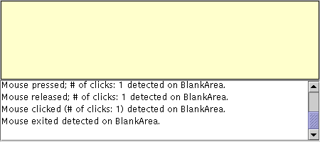

Feedback Form
|
|
Start of Tutorial > Start of Trail > Start of Lesson |
Search
Feedback Form |
Mouse events tell you when the user uses the mouse (or similar input device) to interact with a component. Mouse events occur when the cursor enters or exits a component's onscreen area and when the user presses or releases one of the the mouse buttons.Tracking the cursor's motion involves significantly more system overhead than tracking other mouse events, so mouse-motion events are separated into a separate listener type (see How to Write a Mouse Motion Listener).
To track mouse wheel events, you can register a mouse-wheel listener. See How to Write a Mouse Wheel Listener for more information.
If your program needs to detect both mouse events and mouse-motion events, you can use Swing's convenient
MouseInputAdapterclass, which implements bothMouseListenerandMouseMotionListener. It does not implement theMouseWheelListenerinterface. [Footnote:MouseInputAdapterdoesn't directly implementMouseListenerandMouseMotionListener. Instead, it implementsMouseInputListener, a convenience interface that implementsMouseListenerandMouseMotionListener.]The following example shows a mouse listener. At the top of the window is a blank area (implemented, strangely enough, by a class named
BlankArea). The mouse listener listens for events both on theBlankAreaand on its container, an instance ofMouseEventDemo. Each time a mouse event occurs, a descriptive message is displayed under the blank area. By moving the cursor on top of the blank area and occasionally pressing mouse buttons, you can fire mouse events.
 [PENDING: Updated screenshot with sample output forthcoming.]
You can find the demo's code in
Try this:
- Run MouseEventDemo using JavaTM Web Start. Or, to compile and run the example yourself, consult the example index.
- Move the cursor into the yellow rectangle at the top of the window.
You'll see one or more mouse-entered events.- Press and hold the mouse button.
You'll see a mouse-pressed event. You might see some extra mouse events, such as mouse-exited and then mouse-entered.- Release the mouse button.
You'll see a mouse-released event. If you didn't move the mouse, a mouse-clicked event will follow.- Press and hold the mouse button, and then drag the mouse so that the cursor ends up outside the window. Release the mouse button.
You'll see a mouse-pressed event, followed by a mouse-exited event, followed by a mouse-released event. You are not notified of the cursor's motion. To get mouse-motion events, you need to implement a mouse-motion listener.MouseEventDemo.javaand
BlankArea.javapublic class MouseEventDemo ... implements MouseListener { //where initialization occurs: //Register for mouse events on blankArea and the panel. blankArea.addMouseListener(this); addMouseListener(this); ... public void mousePressed(MouseEvent e) { saySomething("Mouse pressed; # of clicks: " + e.getClickCount(), e); } public void mouseReleased(MouseEvent e) { saySomething("Mouse released; # of clicks: " + e.getClickCount(), e); } public void mouseEntered(MouseEvent e) { saySomething("Mouse entered", e); } public void mouseExited(MouseEvent e) { saySomething("Mouse exited", e); } public void mouseClicked(MouseEvent e) { saySomething("Mouse clicked (# of clicks: " + e.getClickCount() + ")", e); } void saySomething(String eventDescription, MouseEvent e) { textArea.append(eventDescription + " detected on " + e.getComponent().getClass().getName() + "." + newline); } }
The corresponding adapter class is
MouseAdapter. You can also use the Swing adapter class,
MouseInputAdapterMouseListenerandMouseMotionListener.
Method Purpose mouseClicked(MouseEvent)Called just after the user clicks the listened-to component. mouseEntered(MouseEvent)Called just after the cursor enters the bounds of the listened-to component. mouseExited(MouseEvent)Called just after the cursor exits the bounds of the listened-to component. mousePressed(MouseEvent)Called just after the user presses a mouse button while the cursor is over the listened-to component. mouseReleased(MouseEvent)Called just after the user releases a mouse button after a mouse press over the listened-to component.
Method Purpose int getClickCount()Return the number of quick, consecutive clicks the user has made (including this event). For example, returns 2 for a double click. int getX()
int getY()
Point getPoint()Return the (x,y) position at which the event occurred, relative to the component that fired the event. int getButton()Return which mouse button, if any, has changed state. One of the following constants is returned: NOBUTTON,BUTTON1,BUTTON2, orBUTTON3. Introduced in release 1.4.boolean isPopupTrigger()Return trueif the mouse event should cause a popup menu to appear. Because popup triggers are platform dependent, if your program uses popup menus, you should callisPopupTriggerfor all mouse-pressed and mouse-released events fired by components over which the popup can appear. See Bringing Up a Popup Menu for more information about popup menus.String getMouseModifiersText(int)Return a Stringdescribing the modifier keys and mouse buttons that were active during the event, such as "Shift", or "Ctrl+Shift". These strings can be localized using the awt.properties file. Introduced in release 1.4.The
MouseEventclass inherits many useful methods from InputEventComponentEventAWTEvent
Method Purpose int getID()
(injava.awt.AWTEvent)Return the event type. Component getComponent()
(inComponentEvent)Return the component that fired the event. You can use this method instead of the getSourcemethod.int getWhen()Return the timestamp of when this event occurred. The higher the timestamp, the more recently the event occurred. boolean isAltDown()
boolean isControlDown()
boolean isMetaDown()
boolean isShiftDown()
Return the state of individual modifier keys at the time the event was fired. int getModifiers()Return the state of all the modifier keys and mouse buttons when the event was fired. You can use this method to determine which mouse button was pressed (or newly released) when a mouse event was fired. The InputEventclass defines these constants for use with thegetModifiersmethod:ALT_MASK,BUTTON1_MASK,BUTTON2_MASK,BUTTON3_MASK,CTRL_MASK,META_MASK, andSHIFT_MASK. For example, the following expression is true if the right button was pressed:(mouseEvent.getModifiers() & InputEvent.BUTTON3_MASK) == InputEvent.BUTTON3_MASKint getModifiersEx()Return the extended modifier mask for this event. Extended modifiers represent the state of all modal keys, such as ALT, CTRL, META, and the mouse buttons just after the event occurred. You can check the status of the modifiers using one of the following predefined bitmasks: SHIFT_DOWN_MASK,CTRL_DOWN_MASK,META_DOWN_MASK,ALT_DOWN_MASK,BUTTON1_DOWN_MASK,BUTTON2_DOWN_MASK,BUTTON3_DOWN_MASK, orALT_GRAPH_DOWN_MASK. For example, to check that button 1 is down, but that buttons 2 and 3 are up, you would use the following code snippet:Introduced in release 1.4.if (event.getModifiersEx() & (BUTTON1_DOWN_MASK | BUTTON2_DOWN_MASK | BUTTON3_DOWN_MASK) == BUTTON1_DOWN_MASK) { ... }int getModifiersExText(int)Return a string describing the extended modifier keys and mouse buttons, such as "Shift", "Button1", or "Ctrl+Shift". These strings can be localized by changing the awt.properties file. Introduced in release 1.4. The SwingUtilities
Method Purpose boolean isLeftMouseButton(MouseEvent)
boolean isMiddleMouseButton(MouseEvent)
boolean isRightMouseButton(MouseEvent)Return trueif the passed-in event specifies the left, middle, or right mouse button, respectively.
The following table lists the examples that use mouse listeners.
Example Where Described Notes MouseEventDemoThis section Reports all mouse events that occur within a blank panel to demonstrate the circumstances under which mouse events are fired. CoordinatesDemoIntroduction to Painting Concepts Draws a small dot where the user clicks the mouse. Also reports the x, y location of the cursor and of the most recent mouse click. SelectionDemoIntroduction to Painting Concepts Lets the user drag a rectangle to select a portion of an image. Uses a subclass of MouseInputAdapterto listen to both mouse events and mouse-motion events.GlassPaneDemoHow to Use Root Panes Uses a subclass of MouseInputAdapterto listen to mouse events and mouse-motion events on the root pane's glass pane. Redispatches the events to underlying components.TableSorterHow to Use Tables Listens to mouse events on a table header. Sorts data in the selected column. PopupMenuDemoHow to Use Menus Displays a popup menu in response to mouse clicks. TrackFocusDemoHow to Use the Focus Subsystem The custom component, Picture, implements a mouse listener that requests the focus when a user clicks on the component.
|
|
Start of Tutorial > Start of Trail > Start of Lesson |
Search
Feedback Form |
Copyright 1995-2004 Sun Microsystems, Inc. All rights reserved.